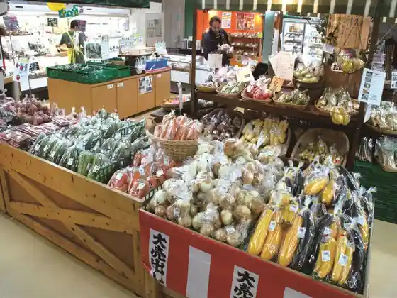
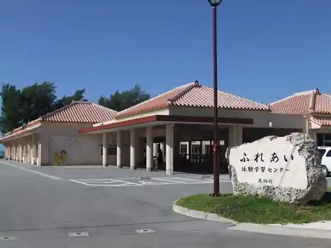
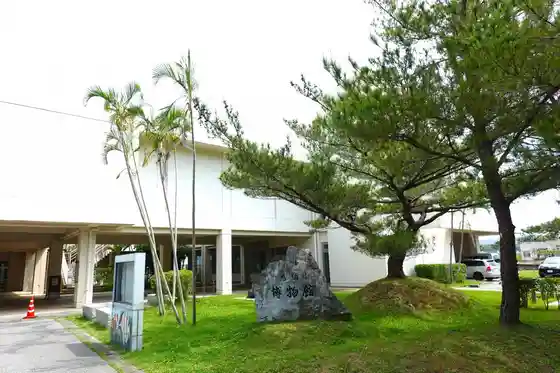

Onna Seaside Park Nabii Beach
Onna, Okinawa · 098-966-8839 · Official / source link
Onna no Eki Nakayukui Market
Onna, Okinawa · 098-964-1188 · Official / source link

THE BEACH CLUB
Onna, Okinawa · 070-8534-2002 · Official / source link
Ippan Shadanhojin Onna Tourism Association
Onna, Okinawa · 098-966-2893 · Official / source link

Onna Museum
Onna, Okinawa · 098-982-5112 · Official / source link

2 Sai Kara OK♪ Sugarutonkayakku Tour Kaiyu Kurabu
Onna, Okinawa · 090-5290-9884 · Official / source link
Onna Bunkajoho Center
Onna, Okinawa · 098-982-5432 · Official / source link
Okinawa Daibingusabisu Airu
Onna, Okinawa · 098-965-3345 · Official / source link
Yachai-chura Onna Mise
Onna, Okinawa · Official / source link
Livefish OKINAWA
Onna, Okinawa · 098-955-2703 · Official / source link
Manza Beach
Onna, Okinawa · 098-966-1211 · Official / source link
Manza Ke
Onna, Okinawa · 098-966-8080 · Official / source link
Sanmariina Beach
Onna, Okinawa · 098-965-2222 · Official / source link
Mun Beach
Onna, Okinawa · 098-965-1020 · Official / source link
PANZA Okinawa
Onna, Okinawa · 050-5236-7750 · Official / source link
Taiga Beach
Onna, Okinawa · 098-993-7108 · Official / source link
2 Toshi Kara 70 Toshi Made Sankakano ! Divingshop Ryo
Onna, Okinawa · 080-3996-1114 · Official / source link
Rentarutoraiku yawn
Onna, Okinawa · 080-4982-1024 · Official / source link
Runessansu Beach
Onna, Okinawa · 098-965-0707 · Official / source link
Misshon Beach
Onna, Okinawa · 098-967-8802 · Official / source link
Haiatto Riijienshii Se Ryo Kaki Ai Land Okinawa
Onna, Okinawa · 098-960-4321 · Official / source link
gajumaru art craft
Onna, Okinawa · 098-966-2035 · Official / source link
Ryukyu Garasu Ko Workshop
Onna, Okinawa · Official / source link
Gyarariiyushibin
Onna, Okinawa · 098-964-6926 · Official / source link
Aramoa Resort Shoppingu Center
Onna, Okinawa · 098-965-6680 · Official / source link
Tezukuri Workshop Tatsu Bo
Onna, Okinawa · 098-964-4210 · Official / source link
GlassWork Chuki
Onna, Okinawa · 098-989-0233 · Official / source link
Miyuki Beach
Onna, Okinawa · 098-967-7777 · Official / source link
Naka Haku Iseki (Kuni Shitei Historic Site)
Onna, Okinawa · Official / source link
Ao no Cave Nettaigyo Shu no Ga Ru & Kayakku Okinawa Andago
Onna, Okinawa · 070-5692-3212 · Official / source link
Kafegyararii Tsuchi Hana Tsuchi Hana
Onna, Okinawa · 098-965-1666 · Official / source link
Paresuinmun Beach
Onna, Okinawa · 098-964-3512 · Official / source link
Okinawa Herikoputa Yuran
Onna, Okinawa · 0120-510-613 · Official / source link
Nachuraruburu (Shin'ei Ta Misaki Mise)
Onna, Okinawa · 090-9497-7374 · Official / source link
Okinawa Tour Gaido SEEKER
Onna, Okinawa · 080-3861-1379 · Official / source link
Za Mun Beach Museum Resort Marinsupotsu
Onna, Okinawa · 098-965-1020 · Official / source link
Nihombunka Taiken Shisetsu (Sasa Kiri Iori)
Onna, Okinawa · 098-967-8175 · Official / source link
Okinawa Andago Ao no Cave Shu no Ga Ru &SUP Kurujingu
Onna, Okinawa · 070-5692-3212 · Official / source link
Kuriakayakku Experience (Buruoshan Okinawa)
Onna, Okinawa · 098-965-1888 · Official / source link
Za Mun Beach Museum Resort Munshiisaidogyararii
Onna, Okinawa · 098-965-1020 · Official / source link
Hamabaru Beach
Onna, Okinawa · 098-967-7777 · Official / source link
(Ao no Cave) He Iku Nara !! Marin Club UMI
Onna, Okinawa · 098-989-7730 · Official / source link
Okinawa Andago Kayakku & Nangoku Howaito Beach Nettaigyo Shu no Ga Ru
Onna, Okinawa · 070-5692-3212 · Official / source link
Nettaigyo to Sangosho no Umi SUP& Shu no Ga Ringu
Onna, Okinawa · 090-1949-6326 · Official / source link
Okinawa Andago Nettaigyo to Ao no Cave Shu no Ga Ru
Onna, Okinawa · 070-5692-3212 · Official / source link
Okinawa Andago Kayakku De Iku Mujin Shima & Nettaigyo Shu no Ga Ru
Onna, Okinawa · 070-5692-3212 · Official / source link
Pinkumarin Club
Onna, Okinawa · 098-965-6060 · Official / source link
Dangaizeppeki Shiikayakku & Sango Sho Tanken to Kaigara Hiroi Okinawa Andago
Onna, Okinawa · 070-5692-3212 · Official / source link
Okinawa Andago Sutandoappupadorubodo
Onna, Okinawa · 070-5692-3212 · Official / source link
Pro Scuba Team SEALs
Onna, Okinawa · 098-966-8890 · Official / source link
Arugaido Okinawa B (Ao no Cave Shu no Ga Ringu no Boken)
Onna, Okinawa · 098-982-5605 · Official / source link
urumo Spa CHURAUMI Thalassotherapy
Onna, Okinawa · 098-966-2212 · Official / source link
Shiinasafu Safinsukuru
Onna, Okinawa · 098-964-1600 · Official / source link
Arugaido Okinawa CL
Onna, Okinawa · 098-982-5605 · Official / source link
Piraniadaibazu Okinawa SDI Raisensukosu
Onna, Okinawa · 098-967-8487 · Official / source link
Okinawa De Suteki Na Jikan Yoga SUP& Yoga
Onna, Okinawa · 090-1949-6326 · Official / source link
Ryukyu Village Tagengo Kanko Suishinkyogikai
Onna, Okinawa · Official / source link
Arugaido Okinawa S (Sutandoappupadoru no Boken)
Onna, Okinawa · 098-982-5605 · Official / source link
Arugaido Okinawa CS (Sansettokayakku no Boken)
Onna, Okinawa · 098-982-5605 · Official / source link
Bentosudaibazu
Onna, Okinawa · Official / source link
Arugaido Okinawa C
Onna, Okinawa · 098-982-5605 · Official / source link
CalmlyOkinawa
Onna, Okinawa · 090-6867-8849 · Official / source link
Daibu Center Airuzu
Onna, Okinawa · 090-9095-7644 · Official / source link
Arugaido Okinawa SS (Sutandoappupadoru De Sansetto no Boken)
Onna, Okinawa · 098-982-5605 · Official / source link